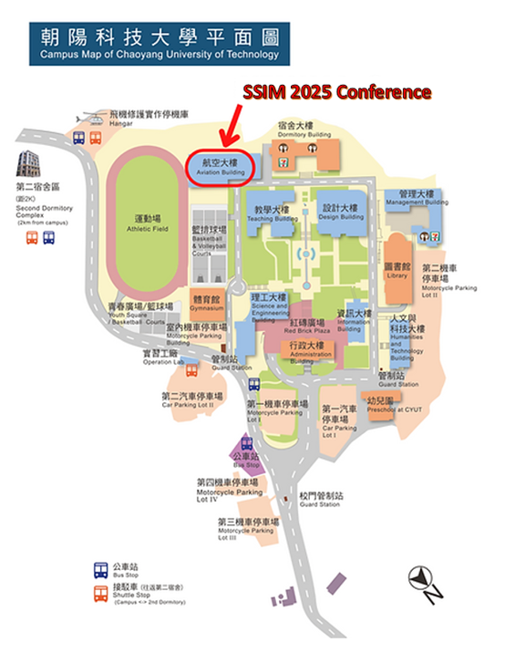

Conference Venue
The conference ssim2025 will be held at the Chaoyang University of Technology, Taichung, Taiwan.
Add: No.168, Jifeng E. Rd., Wufeng Dist., Taichung City 413310, Taiwan (R.O.C.)

Recommended Travel Sites:
● Taichung Travel Net
● Taiwan Fun
Hotel And Tour
Under Construction...
About Taiwan

Formosa, derived from the Portuguese “Ilha Formosa” (Beautiful Island),
has been a representative appellation of Taiwan to the world for centuries.
Shaped roughly like a tobacco leaf, Taiwan’s located between two major climatic zones.
Situated in the Pacific Ocean about 160 kilometers (100miles)
from the southeastern coast of the Chinese mainland and located about midway
between Korea and Japan to the north and Hong Kong and the Philippines to the south,
Taiwan is a natural gateway to and within Asia.
Taiwan’s total land area is about 36,000 square kilometers (14,400 square miles).
It is shaped like a leaf that is narrow at both ends.
It lies off the southeastern coast of mainland Asia,
across the Taiwan Strait from China - an island on the western edge of the Pacific Ocean.
To the north is Japan; to the south is the Philippines.
Many airlines fly to Taiwan, making it the perfect travel destination.
Taiwan lies on the western edge of the Pacific “rim of fire,”
and continuous tectonic movements have created majestic peaks,
rolling hills and plains, basins, coastlines, and other natural landscapes.
Taiwan’s tropical, sub-tropical, and temperate climates provide clear differentiation
between the different seasons. There are rare or endangered species of wildlife on the island.
Among these are the land-locked salmon, Taiwan serow, Formosan rock monkey, Formosan black bear,
blue magpie, Mikado Pheasant, and Hsuehshan grass lizard.
Taiwan has a population of 23 million. The larger part of the country’s
inhabitants are the descendants of immigrants from the various provinces of mainland China,
but in particular from the southeastern coastal provinces: Fujian and Guangdong.
Because the different ethnic groups have fairly well integrated,
differences that originally existed between people from different provinces have gradually disappeared.
Nearly 500,000 indigenous people, the original inhabitants of Taiwan,
still live here; they are into 16 different tribes, namely Amis, Atayal,
Paiwan, Bunun, Puyuma, Rukai, Tsou, Saisiyat, Yami, Thao, Kavalan, Truku,
Sakizaya, Sediq, Kanakanavu, and Hla'alua.
In addition, the natural bounty of beauty of Taiwan is unequaled,
including sun splashed beaches and tranquil lakes, gushing waterfalls and soothing hot-springs,
and an exotic array of tropical flora and fauna. Likewise,
the traditional Chinese arts and crafts still flourish in Taiwan today.
Calligraphy and painting, martial and medical arts, philosophy and religion,
and the sublime culinary arts of classical Chinese cuisine continue to thrive and develop here,
giving Taiwan a traditional Chinese ambiance that is impossible to find anywhere else in the world today.
About Taichung

Taichung city occupies a large portion of the Taichung basin. To the north, also in the Taichung basin lies Fengyuan city, the Houli mountain terrace and even further north Miaoli county. The Dadu mountain terrace marks the western boundry of the city, beyond which lies the western coastal alluvial plain and Taichung port.
Marking the southern boundry of the city is the Dadu river, across which is Changhua county and the Bagua mountain terrace.
To the east, and of most interest to tourists, is the Central mountain range - a stunning range famous for fantastic scenery that runs from the far north of the island to the very south.
By moving not far from the city, there are many other very attractive resorts.
For examples, Sun Moon Lake, located at the geographic center of Taiwan,
has the sparkling blue waters. Alishan, a famous scenic spot in central Taiwan
that presents beautiful scenery, fresh air, and outstanding panoramic view,
lays a more than 3,000-year-old cypress tree in the town nearby. And Kenting National Park,
containing many unusual and exotic tropical plant species, offers broad pastures,
rocky hills, warm sandy beaches and coral shorelines.
Taichung’s Traffic Lines
 (This image can link to Taichng Travel Net)
(This image can link to Taichng Travel Net)
Taichung has a range of options for transport in and out of the city,
both public and private, that put most similarly-sized cities world-wide to shame.
For links to other cities, there is a wide variety of highway bus companies,
offering everything from budget seats to giant plush lazyboy-style chairs with private video screens,
video games and massage functions. For rail travel,
there is the efficient traditional Taiwan Rail network,
plus the more recently-constructed Taiwan High Speed Rail network that offers connections
to Taipei and Kaohsiung in about an hour, plus links to Taoyuan
(where there’s a shuttle bus to the international airport), Hsinchu, Chiayi and Tainan.
Taichung’s Ching Chuan Kang (CCK) International Airport also
offers regular international flights to Hong Kong, Ho Chi Minh City,
Shanghai and other Asian/mainland Chinese destinations. Inside the city,
Taichung is known for relatively good traffic conditions.
A new TTJ city bus system has recently been put in place that is efficient and easy to use.
Taxis are plentiful and inexpensive. Over the next several years,
Taichung is also constructing a Mass Rapid Transit system.